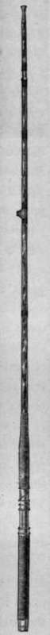
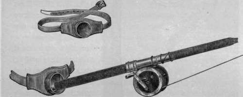
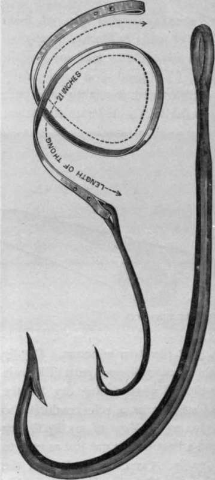

Tarpon Fishing In The Gulf Of Mexico. Part 3
Description
This section is from the book "Sea Fishing", by John Bickerdyke. Also available from Amazon: Sea Fishing.
Tarpon Fishing In The Gulf Of Mexico. Part 3
' When you buy tarpon tackle, young man,' remarked an old Southern gentleman to me, ' you have got to remember that you may expect to hook something like a thirty-knot torpedo boat'.
Personally I did not suffer. I broke a borrowed rod and I kindly split a friend's reel, but, having implicitly followed the advice of the New York dealer I have mentioned, I returned with all my gear intact. A charm of tarpon fishing is the simplicity of the outfit. There is no vexed question of flies. Baby tarpon have been caught with flies. I myself captured one with a phantom minnow ; but, so far as I am aware, there is but one method of battling with a big tarpon, and the sole requirements of the sport are the lightest kind of line, compatible with strength, a short stiff rod, and a reel that runs on ball bearings. 61. is a good deal to pay for a reel, and I blinked at the price, but I do not think a good tarpon reel could be made and sold at a profit for less.
Tarpon Rod.
It would be well, I think, if tarpon lines could be made with a distinct colouring for each fifty yards, so that one might know how much line is out. After prolonged immersion in the water the line swells, thus making it very difficult to tell how much one has left on the reel. Overrunning one's reel with a tarpon is, of course, fatal, and it very often occurs. At present one's only plan is to give steadily as little line as possible, but in the excitement of the moment it is not always easy to carry out careful theories. I would suggest that part of a tarpon reel line be coloured blue and the last twenty-five yards red. One would then know exactly where one was. Six hundred feet of line require a good deal more management than most people imagine. A good deal could be done to improve tarpon reel lines. Their expansion when wet is an objectionable feature. Manufacturers should remember that the great essential is lightness. Lord Orford uses a new kind of silk line which he gets from Chicago.
I would advise all who have some care for their personal safety to wear a belt when tarpon fishing. For a dollar one can purchase a leather belt in the front of which is a deep cup. Into this cup, when playing one's fish, the butt of the rod is rammed. The strength of the fish is so tremendous that, but for this simple device, many more 150-pounders would be lost than is the case at present.
See that there is fixed to your reel a leather guard, so that when the line is running out rapidly you can press your thumb upon it, and thereby form a sort of brake ; but, in putting on the brake, note that the guard is between you and the rapidly whirling spindle of the reel. I omitted this precaution on one occasion, and my thumb was in hospital for some weeks in consequence. There are reasons, as will presently be seen, why it is absolutely essential that a tarpon reel should run as freely as the wheel of a bicycle.
I am often asked, by the increasing number of people from Great Britain who are thinking of going to Florida for angling during the spring, whether it is advisable to take any English tackle, and I would say ' Yes.' I had good sport among many kinds of fish with a light greenheart and an eight-ounce built cane rod. A salmon rod is useful, with a moderate assortment of gaudy flies, .spoon baits, and phantom minnows. Dry-fly fishing is practically out of the question in such parts of Florida as I visited. I did occasionally kill when fishing dry, but the banks and rivers and creeks are not as a rule conducive to drying the lure in the orthodox way. Most of my fly fishing was done in the evening from a boat, and it was just as easy to kill with a wet as with a dry fly. Occasionally, indeed, the fish were so ravenous that one could kill quite easily with a bare hook. The jack fish, a particularly game specimen, of which more anon, were often so numerous as to become a nuisance. Sometimes one could kill at every cast.
Leather Belt And Rod.
One of the most important parts of the tarpon equipment is the snell (anglice snood), or trace, to which the hook is attached. Piano wire and circular lamp-wick bound with wire are seen here and there. There are several other kinds of snells in use, but, though it is unwise to prophesy, I imagine that all of them will give way to those made of thin raw hide. The strength of this material is undeniable ; and it has this advantage, that the shark, whose teeth are extremely sharp, can cut through it easily.
Sharks are one of the nuisances of tarpon fishing. They are for ever stealing one's bait and giving false runs. Having hooked a shark, one has either to play him and kill him, or cut him loose. Playing him may mean vast loss of time and temper. He may tow one a mile from one's position.
RAW HIDE TRACE AND HOOK.
On the other hand, to cut him loose is probably to waste the greater portion of one's line.
For a proper understanding of the subject let me describe a day's tarpon fishing, remembering always that there are slight variations in the sport in different parts of Florida. In some places no one thinks of fishing before eleven o'clock in the day. In others three fish have been killed before six o'clock in the morning. I will describe a day I spent at Marco, a small settlement a long way down the Gulf of Mexico, which may be visited by those who prefer camp life to the comparatively civilised existence at Punta Gorda or ' Myers ' (Fort Myers).
We travelled to Marco, a little settlement fringed round with cocoanut palms, one stormy afternoon in a small boat, and we spent that night at a little store, a rough shanty, but well equipped nevertheless. One could purchase all the needs of a rude civilisation at this place. The Seminole Indians obtain many of their goods there, and give in exchange skins of their own tanning, some most admirably prepared.
Continue to:
- prev: Tarpon Fishing In The Gulf Of Mexico. Part 2
- Table of Contents
- next: Tarpon Fishing In The Gulf Of Mexico. Part 4
Tags
fishing, hooks, bait, fishermen, spanish mackerel, mackerel fishing